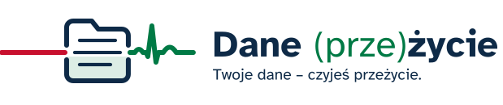
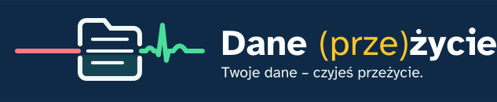
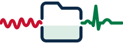
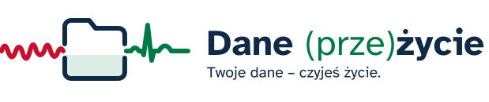
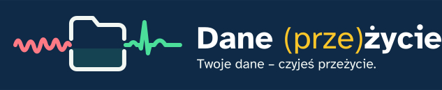
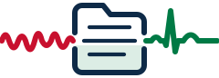
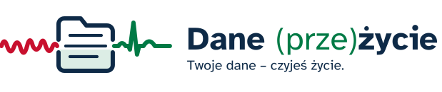
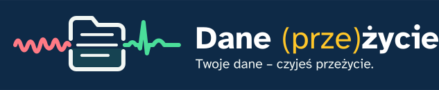
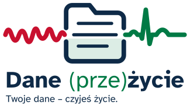

Hasło: Twoje dane – czyjeś przeżycie. · Kolory z palety projektu (zieleń AED #007A45, granat #0E2A47, czerwień #C8102E); na granacie jaśniejsze odpowiedniki dla kontrastu. Koncepcja: chaotyczny sygnał wchodzi do pół-folderu z danymi (wykaz) i wychodzi jako rytm zatokowy.
Wersja wyjściowa zespołu. Uwaga merytoryczna: linia płaska = asystolia, rytm niedefibrylacyjny – AED go nie leczy.


Poprawne medycznie (AED przerywa migotanie komór). Folder bez treści słabiej mówi „dane / wykaz”.



REKOMENDACJA. Podwójna metafora: chaos komór → miarowy rytm oraz rozproszone dane → jeden standardowy wykaz.



Folder z jednym uderzeniem serca – favicon, awatar, naklejka. Układ pionowy dla wariantu C.
